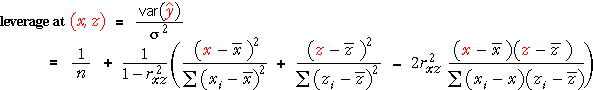

Variability of least squares plane
We showed earlier that the least squares plane is a random quantity — it varies from sample to sample. The position of the least squares plane has greatest variability for (x, z) combinations far from the data and this is particularly pronounced when X and Z are multicollinear.
The variability of predictions from the least squares plane therefore also depends on the (x, z) combination at which the prediction of Y is made:
where rxz is the correlation coefficient between X and Z.
Do not try to remember this formula, but observe that it defines a quadratic surface in x and z and is smallest at the means of X and Z.
Illustration
The left of the diagram below represents a normal linear model with two planes, 2σ above and below the regression plane (which is not shown). The (x, z) values at which data are to be collected are represented by crosses on the x-z plane and as red lines between the two planes.
If response measurements were taken from this model, 95% of them would lie on the red lines (i.e. between the two planes) and 5% would be either above or below.
The right of the diagram shows the variance of predictions as a quadratic surface. Click anywhere on the x-z planes to read off the variance of predictions for that (x, z) combination.
The predictions would be much more variable away from the values of (x, z) at which data are obtained.
Multicollinear data
The following diagram is the same, but X and Z have higher correlation.
Observe that the variance of the predictions are highest at (x, z) combinations in the corners away from the data.
'Best' place for new data
The most effective place to make a new observation is at an (x, z) combination where the position of the least squares plane is least accurately determined — i.e. where the variance of the predictions from the model are highest.
Effect of an extra observation at (x, z)
The diagram below again shows a model on the left. The normal distributions on the right show the resulting distributions of the three least squares parameter estimates.
Click on the x-z plane on the left to see the effect of adding an extra observation there. By dragging this new point, you can see how much this extra observation will increase the accuracy of the parameter estimates.
Accuracy is improved most when the new observation is collected at an (x, z) combination at which the variance of the predictions is highest.
Leverage
Since σ is unknown in practice, we cannot use the variance of the prediction at (x, z) to describe the effectiveness of collecting extra data there. Instead, we use the leverage of (x, z).

In a similar way, we can use leverage to describe the potential influence of each data point in the actual data set. As in simple linear regression, the leverage of the i'th data point is denoted by hii